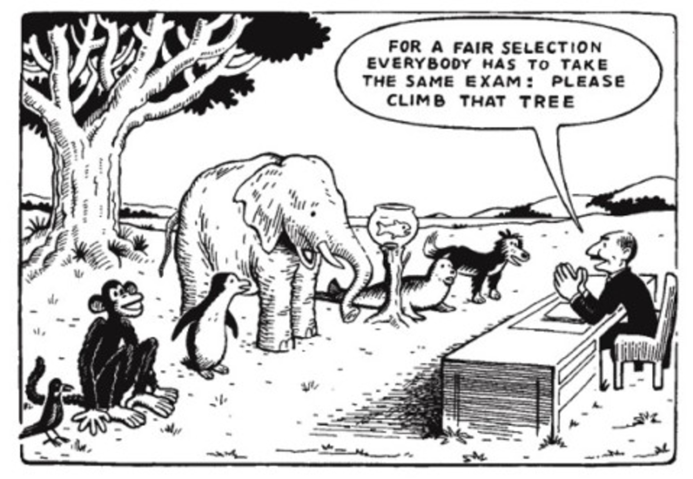

对于人生成长来讲，最重要的是什么？
2019-03-19
一
我们都知道，人与人不同。
很多时候，人与人之间的不同，是与生俱来的。有生理特征的不同，有的人注定长得高，有的人注定长得矮；也有性格特征的不同，有的人外向，有的人内向。
有研究者为了验证人们在性格上的差异在什么时候形成的，就将刚刚出生的婴儿放到一间安静的房间中，然后向他们播放同一种声音，有的婴儿转向声音，而有的婴儿则会向反方向躲避。研究者多次重复，婴儿们对声音刺激的反应基本上都是稳定的：好声者始终好声，恶声者始终恶声。
为了概括人们在性格特质上的差异，心理学家们发明了“大五人格（Big Five）”，将人们的性格特质概括归纳在五个不同的频道上：
- 开放性（Openness to experience）：从好奇、创新到警惕、保守。
- 尽责性（Conscientiousness）：从条理、整洁到散漫、率性。
- 外向性（Extroversion）：从活跃、好社交到冷静、好独处。
- 宜人性（Agreeableness）：从亲和、友善到挑剔、苛刻。
- 神经质（Neuroticism）：从焦虑、敏感到平静、稳定。
每个人在这五个频道上，都总是倾向于其中一端，要么靠左，要么靠右，很少有人不偏不倚的处于中间。而这些倾向性的不同，往往都有一定的生理背景，以神经质为例，生理学家们发现，神经质是大脑内杏仁体的一种过敏反应，每个人都有杏仁体，所以每个人或多或少都存在着某种程度的情绪不稳定性。
心理学家们发明大五人格之类的概括方法，是为了帮助人们寻找适合于自身的发展环境，“找到正确的赛道”。他们最爱引用的一个例子是，史上获得最多奥运奖牌的运动员是有“飞鱼”之称的菲尔普斯，他身高1.93米，臂展超长达到了2.01米，而2004年雅典奥运会1500米和5000米中长跑的金牌获得者奎罗伊身高仅为1.75米，但他的腿却与菲尔普斯一样长，显然，如果调换一下，让菲尔普斯去跑中长跑，让奎罗伊去游泳，不管训练多么刻苦，他们连奥运会的参会资格都不可能得到。
所以对于人生成长来讲，最重要的就是找到适合自己的正确赛道吗？
二
以偏概全、类比错误和偷换概念是日常生活中最常见的认知偏差。运动员的发展只是千万种人生成长范例中一种比较显眼的特例而已，绝大多数普通人的学生时代，并没有像奥运会运动项目那样多种选择，只能通过标准化的考试才能脱颖而出。然而，现实生活中这一种相当常见的现象就是，当自己孩子的成绩不够理想的时候，许多家长就会和孩子一起主动放弃：“也许我的孩子/我只是不擅长读书而已。”
相信很多朋友对于下面这幅画都非常熟悉：

这幅画的创意来源于据说是爱因斯坦说过的一句话：
每个人都身怀天赋，但如果用会不会爬树的能力来评判一只鱼，它会终其一生以为自己愚蠢。
根据引言调查者网站的[考证]，没有任何证据表明爱因斯坦曾经说过这句话。可能是因为我们每个人都有怀才不遇的情结，所以这句话和这张图在网络上长盛不衰，时不时地就会被翻出来，甚至被说成是“最震撼的教育反思”、“对教育最沉痛的控诉”……云云。
我们震撼归震撼，有个问题还是必须冷静思考：人与人之间的差别真的有鱼和猴子之间的差别那么大吗？
“逼鱼爬树”有一个非常隐晦的思维误区，就是认为人的天赋、能力和特质是一成不变的：猴子天生就非常擅长爬树，而鱼永远学不会爬树。
将教育视为“逼鱼爬树”这个观点最早是2004年在美国出现的。那么，现在美国主流意见是如何看待这个问题的呢？今年初，美国K20教育创新研究机构 Teach Thought 发布了《2018年美国教育趋势》，排名第一的不是人工智能、机器人编程和智慧教育之类的，而是“成长型心态”（Grouth Mindset）；同样是在年初，美国《教育周刊》公布了2019年美国教育学者公共影响力排名（RHSU Edu-Scholar），排名第一的是斯坦福大学的心理学教授卡罗尔·德韦克（Carol Dweck），而她正是“成长型心态”提出者，比尔·盖茨对她的《mindset》一书推崇备至。
卡罗尔·德韦克在研究中发现，人们尽管在天赋上各有差异，但真正决定一个人成长高度的是“心态”（mindset）。固定型心态（Fixed Mindset）者倾向于认为一个人的能力和成就主要由天赋决定，而成长型心态（Grouth Mindset）者则倾向于一个人的能力和成就是可以习得的，是可以通过不断的练习加以改进的。
这两种心态对同一件事情会产生截然不同的解释。比如考试失败，固定心态者会想，“我不太擅长读书”；而成长心态者会想：“我哪里做得不好？什么地方可以改进？”如果考了100分，固定心态者会想：“我比较聪明”，而成长心态者会想：“看来前段时间做得不错”。固定型心态者往往倾向于把一件事情解释为结果、评判和标签；而成长型心态者往往倾向于把一件事情解释为一种反馈、过程和经历。
成长型心态者的思维基础主要有两点，一是大脑和肌肉一样，都是会用进废退的，越用越发达；二是接受人与人之间的不同，但是相信一个人的潜力是不可知的，自己的努力还远远没有达到自己的极限。用一句流行语来讲就是：
绝大多数人的努力，都远远没有达到拼天份的程度。
《少有人走的路》的作者斯科特·派克（Scott Peck）也谈到了类似的观点。他一直认为自己擅长心理治疗和行政管理，在机械方面缺乏基因，“天生就不是解决机械问题的料”，一次他看到邻居在修理除草机，就赞叹他的邻居真能干，说自己从来不会，结果他的邻居马上回答：“你只不过没有花时间去尝试罢了。”邻居的话给了他很大的震撼，他下决心有机会一定要尝试一下机械问题，后来有一次他真的帮他的客户解决了汽车刹车问题：
指尖轻轻一拨，问题就彻底解决了。我异常振奋：嘿，我真是一流的机械师啊！
然后他继续写到：
我的专业与机械无关。我既没有机械专业知识，也不愿解决机械问题。大多数情况下，我宁愿求助修理工，替我解决这些问题。我现在知道，这完全是我自己的选择，而不是基因有什么缺陷。我相信，除非存在智力障碍，不然只要花时间学习，就没有什么问题解决不了。
斯科特·派克仅仅只是谈自身的体验和感悟，而卡罗尔的研究，似乎就是通过大量严谨的科学实验来证明下面这一句话：
你相信自己行，你就一定行。你相信自己不行，你就一定不行。
中国出不了卡罗尔这样的科学家，如果一个中国学者来研究这个，一定会被人质疑：“你TMD不是在证明一句正确的废话吗？值得你用毕生精力来研究这个东西？”
但是卡罗尔在美国是RHSU排名第一的学者。这说明，我们很多时候以为自己搞懂了，其实只是一知半解，并没有真懂，就好像中国人发明了指南针，就以为自己真的搞懂了磁铁，而西方人一直探究原理，搞出麦克斯韦方程组后，都还不敢说完全搞懂了磁铁。
我自己也是一样的，稍稍翻了几页卡罗尔的《mindset》后，马上就感觉很兴奋，觉得这真的是一种非常重要的理念，但是一总结就发现：完了！这个说出来不就是一句正确的废话吗？
当然，我书还没看完，也许看完了之后又有新的理解。但是现在我的初步感受是，一定不要给自己或自己的孩子贴标签。一旦贴上某标签，比如“聪明”、“粗心”、“调皮”等等，不管你怎么去解释这种标签，你和你的孩子都会去证明这种标签，合理化这种标签，“我就是这种人啊！”“我就是读书不得行都嘛！”之类的，标签就是最好的辩护理由。
三
当然，人终究还是逃离不了标签的，我们时时刻刻都在接受别人的评判，时时刻刻都在评估自己。
成长型心态者并不太在乎别人的评判，因为他们相信自己在成长，别人看到的都只是暂时的，不代表自己永远的状态。卡罗尔的研究也证明成长型心态者相比固定型心态者更能够客观评估自己，因为很显然，只要你深信自己会越变越好，你就不在乎承认自己现在暂时的挫折和问题，你会选择面对它、克服它，而不是逃避它、否认它。
但是，如果我连续5次考试失败，比如说在小学，连续5次都只考了60几，你说要以成长型心态来看待这个问题，相信自己会越变越好，这现实吗？
这个时候，按照我的理解，有一个小技巧，能够极大的减轻自己的心理负担，那就是当你不得不客观评估自己，给自己贴上一个标签时，一定要注意两点：
- 一是时刻提醒自己，所有的标签、所有的状态都是临时的、阶段性的。
- 二是选择最具体、最真实那个标签贴。
比如，我有一个朋友，吃素。我就不太清楚他给自己贴的标签是什么，如果他给自己贴上“素食者”的标签，那么我猜想他一定会在生活中遇到许多不便和内心道德冲突，但是如果他认同自己是一个“敬畏生命、热爱生命”的人，那么，他很可能会得到更多的平和。
同样地，如果你的孩子连续5次都考试失败，与其给他贴一个“不擅长读书”的标签，不如在以下标签中选择一个：“学习效率不高”、“学习基础不牢”、“学习方法欠佳”……等等等等，标签越具体，就越不容易为标签所困。
当然最佳的做法还是不要给自己的孩子贴任何标签。人虽然与人不同，但同一个人，通过努力，总是能够越变越好，不应该用任何刻板的标签来描述一个发展变化的个体。就像我在前面提到的大五人格，发明这个标签工具的心理学家们也承认，一般而言，人们要大约进入职场四年之后，五大人格特质才趋于稳定。也就是说，虽然一出生就有性格特质的差别，但一直到大学毕业之后，这种差别都有可能发生变化。
变化的前提是什么呢？心态。
对于人生成长来讲，最重要的是拥有相信自己能够成长的心态。